Chanel Cruise 2026/27
The Atlantic coast as the stage for Chanel's new chapter — Cruise 2026/27, told through landscape, heritage, and emotion.
Chanel Allure Homme Édition Blanche
Two figures, a luxury hotel room, a silver cloche concealing a single answer. My personal vision of Allure Homme Édition Blanche.
Panthère
Deep red velvet, black fur, gold catching the low afternoon light through Haussmann windows — a woman and a panther share the same stillness, as if the room had been waiting for both of them. "La Panthère" — AI-generated video inspired by the iconic brand.
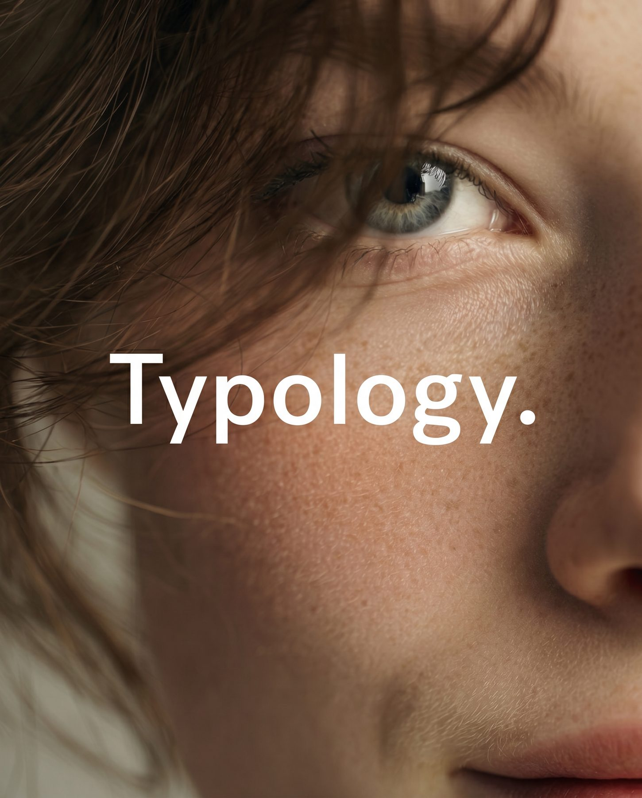
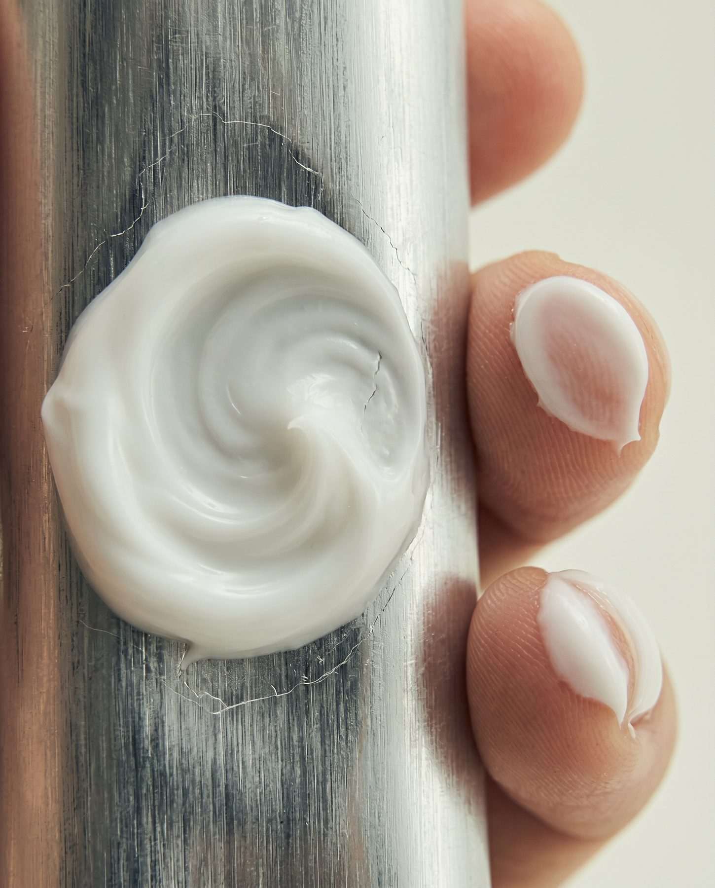
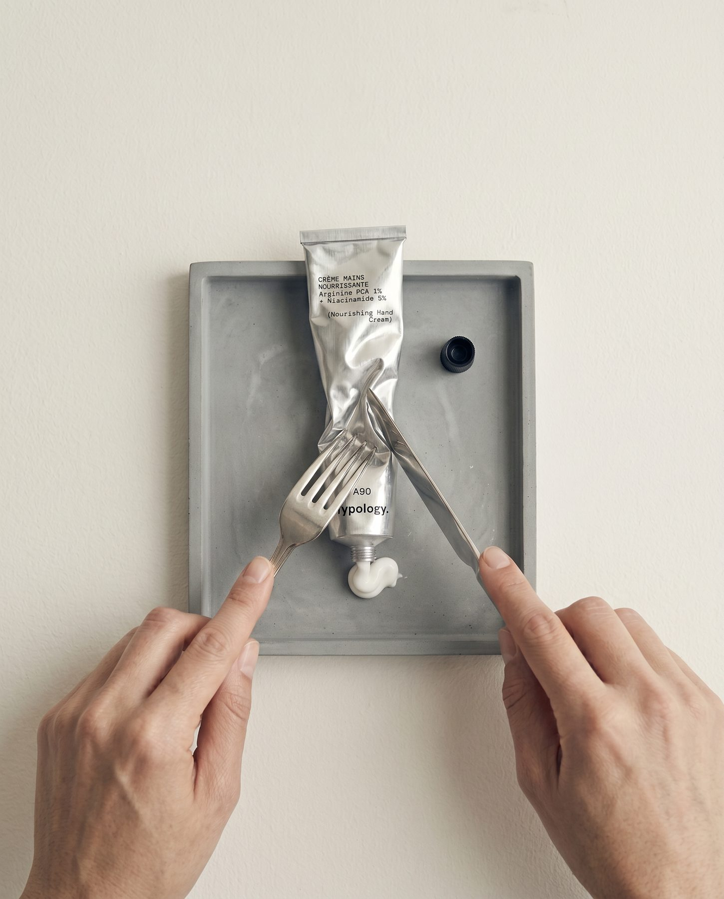
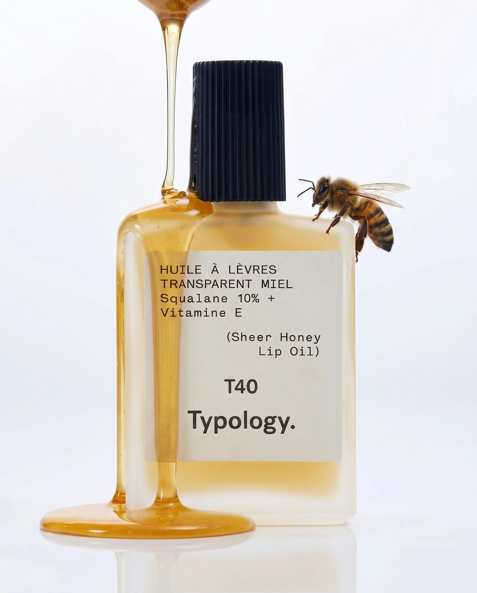
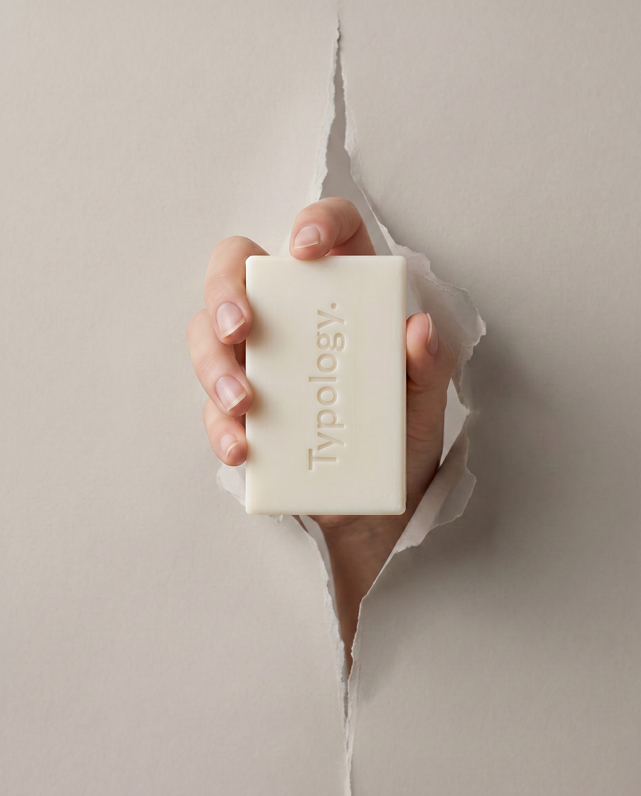
Typology Reimagined
An editorial campaign for Typology, built entirely with AI generation — extending the brand's language of radical transparency into images that haven't been created before.
Read the case study →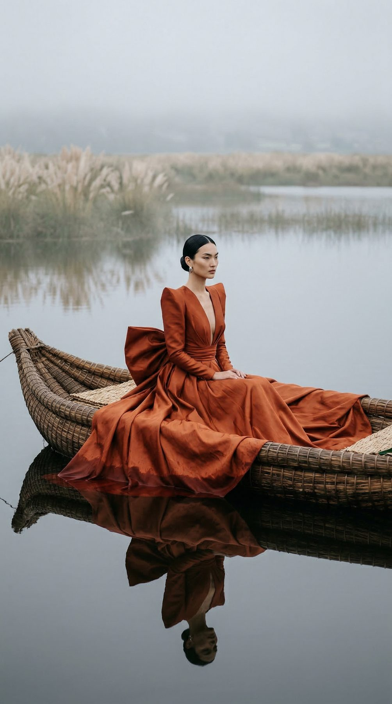
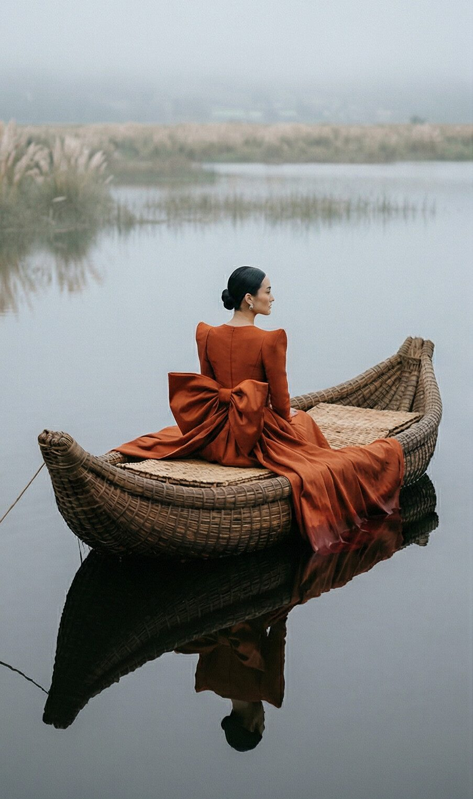
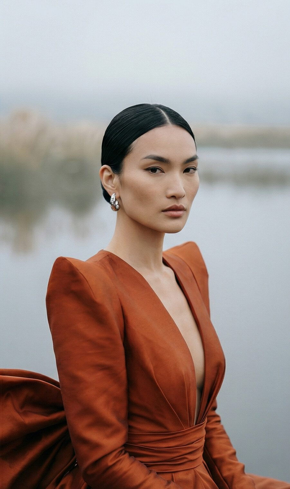
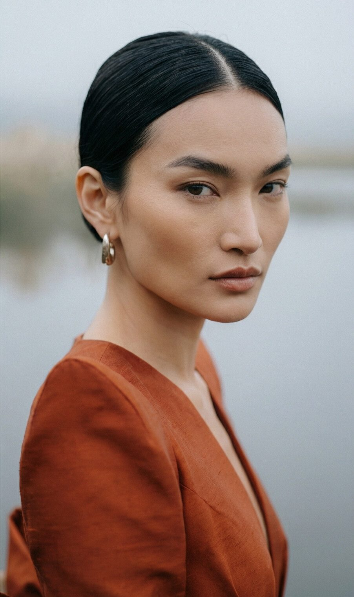
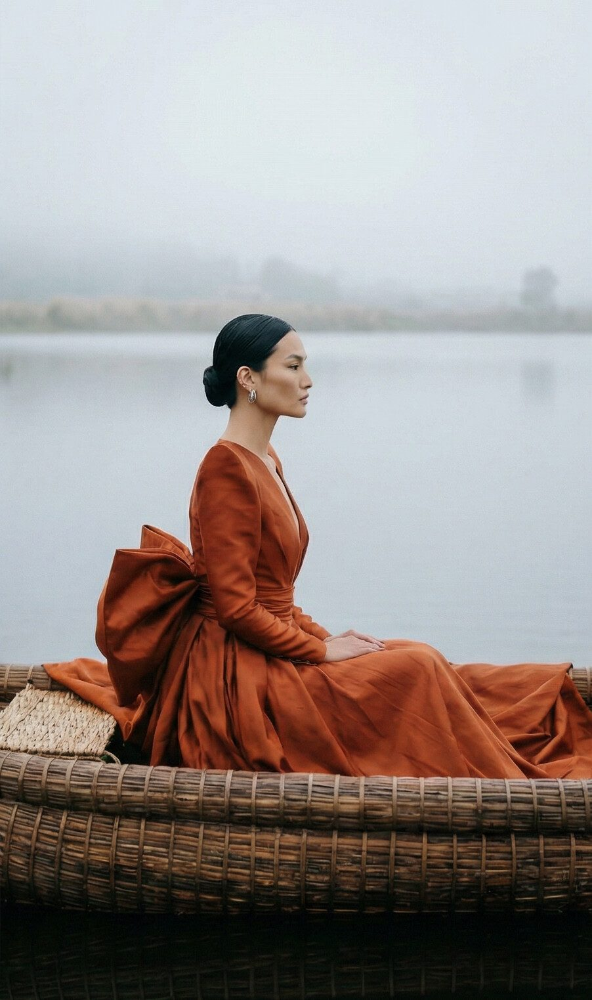
Still Water
A woman in a structured terracotta gown, alone in a woven boat on a perfectly still lake. Fog. Pampas grass. The reflection holds longer than the moment. Silence as a creative choice. Stillness as direction.
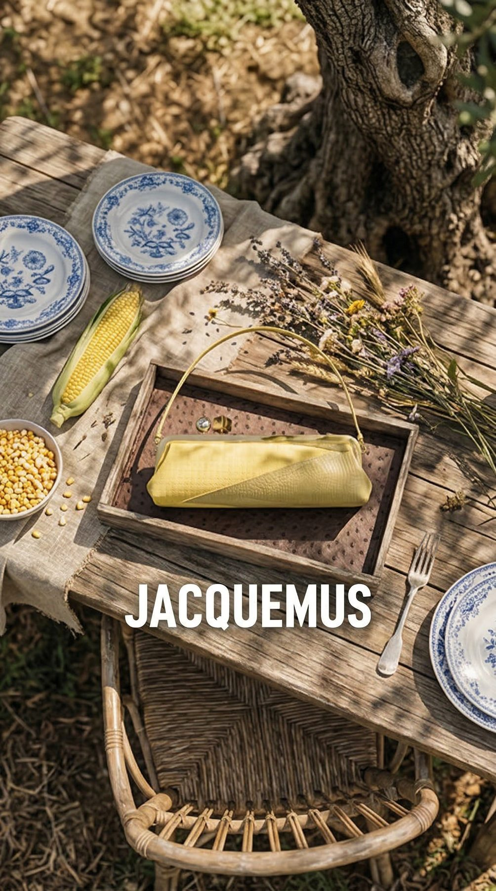
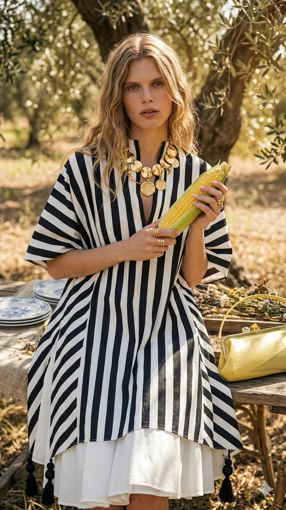
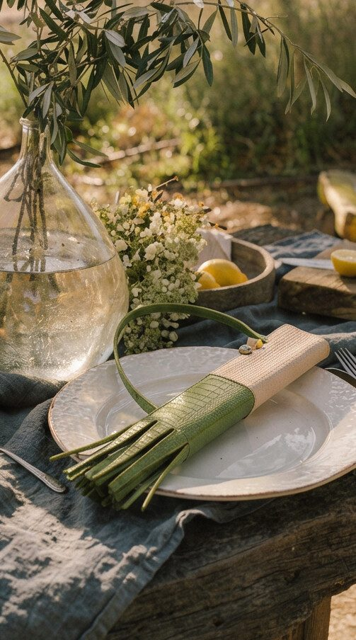
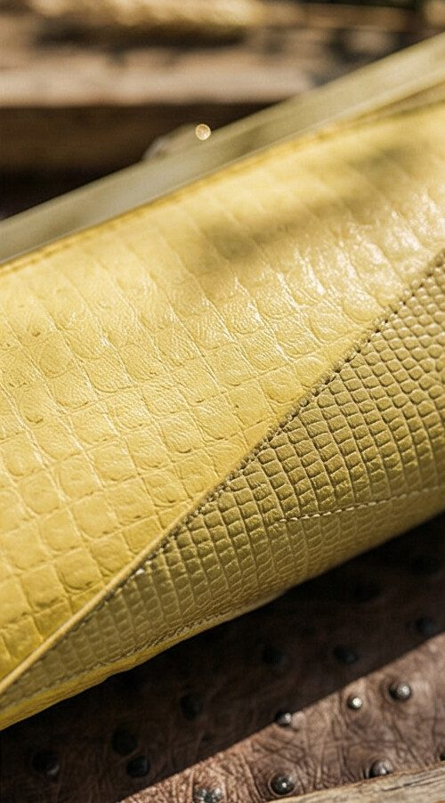
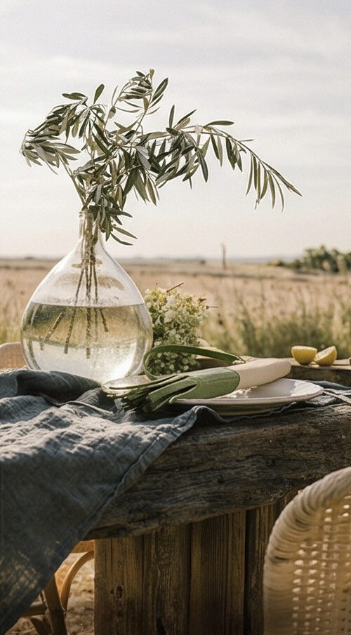
Jacquemus "Poireau/Maïs"
Croc-embossed clutches placed among olive trees, corn, and lavender — a Provençal still life where the bags exist as naturally as the wheat, as natural to the scene as anything grown there.